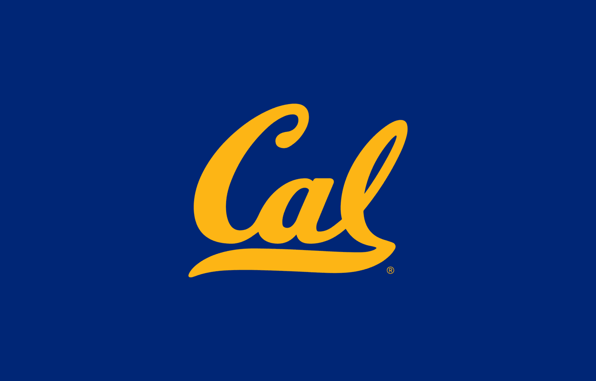
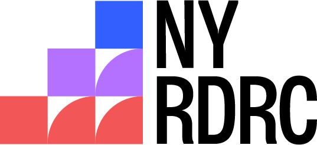
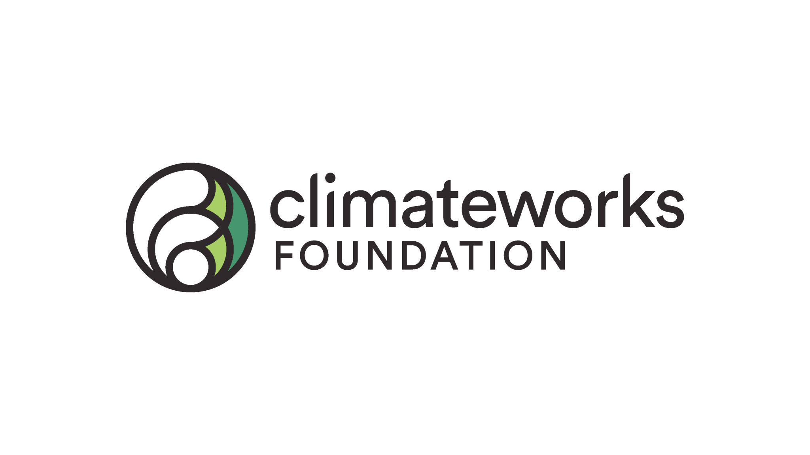
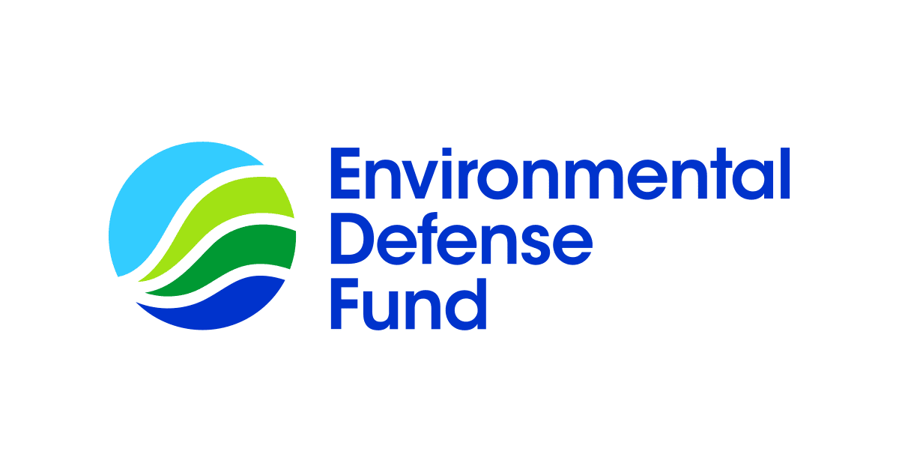
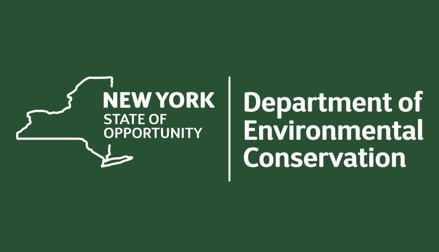
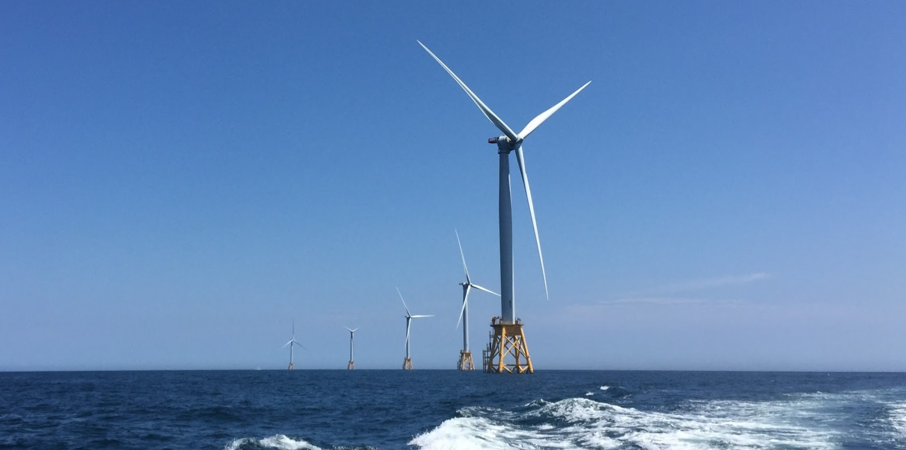

Projects
Funded projects
| Title | Team | Funder | Description | Funding | Start | End | |
|---|---|---|---|---|---|---|---|
|
|
Made in America: Unpacking the Drivers and Impacts of Domestic Clean Energy Manufacturing | Alfred P. Sloan Foundation | To undertake an interdisciplinary research project studying the drivers and impacts of domestic clean energy manufacturing interventions, resulting from an Open Call on Energy System Interactions in the United States | $750,000 | 2025 | 2028 | |
|  | Global Clean Energy Supply Chains Analysis and Power Systems Resources Adequacy Assessment | University of California, Berkeley | The goal of this project is to collaborate with CCCI team to study global clean energy supply chains and power system resources adequacy. | $100,000 | 2024 | 2026 | |
|  | Exploring Energy Burden Among the Older Adults and People with Disabilities in New York City Public Housing Communities | Social Security Administration | The goal of this project is to investigate the energy burden faced by older adults (ages 62 and older) and people with disabilities in New York City to better understand its impact on their wellbeing. | $100,000 | 2024 | 2025 | |
| Power system beyond coal | University of California, Berkeley | The goal of this project is to collaborate with LBL team in modeling the decarbonization of China’s power sector. | $64,000 | 2024 | 2025 | ||
|  | The carbon mitigation, air quality, and human health benefits achieved by global solar PV supply chains | ClimateWorks Foundation | The goal of this project is to investigate the air quality and human health benefits achieved by global solar PV supply chains. | $100,000 | 2023 | 2025 | |
|  | Multi-Country Electricity Transition Potential and Challenges Project (MCET) | Environmental Defense Fund | The goal of this project is to provide technical support to the MCET team to assess the opportunities and barriers to decarbonize their electricity sectors using open data and models. | $40,000 | 2023 | 2024 | |
|  | New York State Solid Waste Characterization | New York State Department of Environmental Conservation | This project will sample a set of municipal waste systems statewide to determine the composition of managed wastes and recyclables. | $4,355,776 ($200,000) | 2020 | 2025 | |
| Workshop on Data Science Across the Undergraduate Curriculum: University-Industry Online Case Studies on Applications of Data Science | National Science Foundation | This project supported the national workshop entitled ‘Data Science Across the Undergraduate Curriculum: University-Industry Online Case Studies on Applications of Data Science’. | $49,796 | 2019 | 2020 | ||

|
Power Systems Modeling and Analysis | Lawrence Berkeley National Laboratory | Multiple projects to collaborate with LBL team modeling the technology and policy options of decarbonizing China’s power systems. | $140,000 | 2018 | 2024 | |
|  | Jobs and economic impact of offshore wind development | Leading Offshore Wind Developer | This project studies the jobs and economic impact of offshore wind development in New York State. | $30,000 | 2018 | 2019 |
No matching items